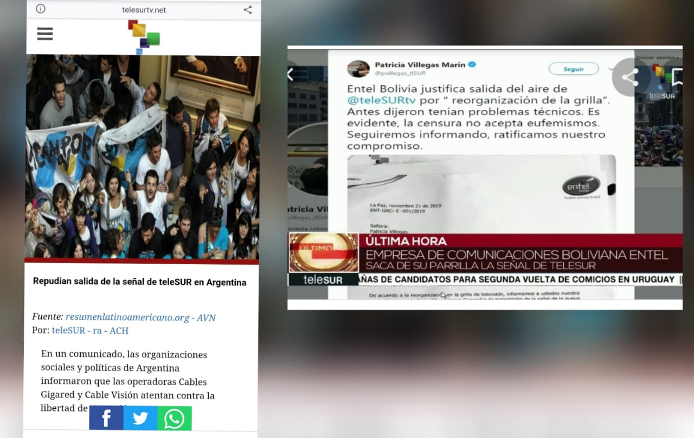

Derribando Ídolos

Los golpes blandos manejan en sus etapas la creación de crisis reales o imaginarias, así como conceptos similares al de “dictadura”, “régimen”, “autoritario”; pasadas las elecciones del 18 de octubre del 2020 en el cual el MAS gano con 55% y posterior a ello las SubNacionales recientes en las cuales las alcaldías de municipios urbanos del eje central se quedaron con la oposición, esto descarta cualquier tipo de narrativa de “fraude” o “dictadura”, lo cierto es que en esta etapa de desestabilización que están gestando desde la oposición y las elites urbanas, quieren jugar con dicha narrativa, la cual por si sola muere, bajo una premisa de mantener el tema de “fraude” del 2019, cuando hasta la fecha e incluso cuando ellos tuvieron el poder (impuesto por los amotinamientos e incumplimiento de deberes de la policía y fuerzas armadas) no consiguieron probarlo.
Hoy quien va jugar el rol más desestabilizador no será la oposición como tal (ya que vimos que los resultados en ambas elecciones los deslegitiman) sino los medios de comunicación, los cuales se encargaran de convertir en héroes o mártires a dichos personajes (por mas puercos, corruptos o mentirosos que sean, señalando a Arias, Manfred y Camacho respectivamente).
He ahí la importancia de derribar al “ídolo”, desde el 2016 hasta que se consuma el Golpe de Estado en noviembre del 2019 se ha gestado en el imaginario colectivo de las ciudades la idea de que todo lo MASISTA es malo, e incluso han creado Fake News de alto alcance, sin que sus autores sean juzgados (caso hijo Evo-Zapata y Carlos Valverde), asimismo también podríamos hablar de que en 14 años y teniendo los medios de comunicación en contra se creó una pos verdad (creencias personales fuertemente arraigadas que han ganado fuerza frente a la lógica y a los hechos), tuvimos crecimiento, estabilidad pero interesaba más la novela de Evo-Zapata etc., esto fue efectivo, puesto que otras narrativas ganaron mayor fuerza, basándose en lo que algunos llaman Shistorm (termino alemán que designa una acción que se produce cuando un grupo de personas no necesariamente coordinadas descalifica a un usuario, a una personalidad pública, a una empresa o a otra organización a causa de algo que se ha dicho o hecho en las redes o fuera de ellas. Algunos comunicadores hablan de la existencia de un periodismo de guerra), cuando analizamos detalladamente los calificativos que van hacia el expresidente Evo, confirmamos que esto fue exitoso, el resultado de todo esto es el #GolpeDeEstadoEnBolivia del 2019, pero esto debe llamarnos a la reflexión y debemos cuestionar algunos aspectos y tomar acciones inmediatas, entre ellas pongo a consideración del lector algunas:
Las actuales autoridades electas opositoras en el eje central son todo aquello que descalificaban del gobierno del MAS: depravados sexuales (La Paz Municipio), corruptos (Cbba Cercado), mentirosos falsos profetas (Caso Sata Cruz, Camacho y sus divorcios), estos ídolos locales de las urbes, siguen en un pedestal de sus ciudades pese a tener todas las denuncias (además de las antes mencionadas) en su contra, lo que se debe hacer es generar espacios de reemplazo, descalificación hacia ellos por parte de colectivos ciudadanos, personalidades influyentes etc., no por el MAS o sus voceros, generando una polarización que ya existe.
El bloque popular debe re articularse y otorgar nuevos espacios de formación a sus juventudes, basados en la experiencia de los compañeros mejor formados, con nuevas perspectivas y proyección (como alguna vez señale, a esta altura no debería existir solo un Andrónico, deberían existir 100 o 200, pero no es así), esto para mostrar que nuevamente, los mejores calificados para manejar el país, son los compañeros de ideología de izquierda en favor de los humildes.
Por otra parte como lo señale en un inicio, si no se toman acciones para poder derribar a los ídolos, de estas regiones, que siguen en ese pedestal y no gracias a méritos propios (buena gestión, logros destacables en otros ámbitos), sino gracias al espacio que los medios de comunicación les han otorgado y que gracias a ello lograron posicionar ideas que refuerzan prejuicios (anticomunismo, racismo, propiedad privada, xenofobia,) y que además apoyan la narrativa desestabilizadora convirtiéndolos en víctimas o mártires, por tanto es necesario también una re estructuración de la estrategia comunicacional del bloque progresista, las autoridades de regulación de medios de comunicación son estatales (de un gobierno electo con el 55% y por ende la población le otorgo la tuición de ejercer control sobre dichas entidades), además como son estatales estas autoridades de regulación, debe evaluarse su rol de control sobre las acciones de los medios de comunicación que dicen ser “objetivos” pero que en realidad no lo son (coberturas insuficientes a analistas de izquierda, criterios sesgados a partir de supuestos analistas, con ideas tendenciosas a manipular el imaginario colectivo y por ende coadyuvar a los gobiernos opositores); muchos dirán “eso no es libertad de expresión”, podría ser, pero la libertad que profesan va arraigada a intereses privados que fueron afectados durante 14 años con medidas progresistas, por último si no se consigue regularlos como se debería, por lo menos otorgaremos mayores espacios, con facilidades para otorgación de frecuencias de emisión, dotación de publicidad a medios alternativos progresistas; la lucha entre medios privados y medios alternativos es desigual, en cuanto a tecnología y recursos económicos para poder acceder a estos espacios, los cuales deben ser mecanismos de promoción de logros y deberían ser muchos canales y frecuencias radiales con contenidos objetivos que desmientan las difamaciones de la oposición y que además derriben a estos falsos ídolos que están siendo financiados por elites y también desde fuera.

Cuantas veces vimos que cuando se toman decisiones que afectan el interés económico de los grandes medios de comunicación privados, tachan a los gobiernos de “dictaduras”, “régimen” etc., pero cuando Mauricio Macri y Jeanine Añez cortaron la señal de Telesur o cuando Lizarraga cerro las radios comunitarias nadie menciono nada, hoy nuestra labor es otorgar mayor cobertura a medios alternativos, medios con un mensaje claro y emancipador en favor de las grandes mayorías, y si, ahora que se tiene el apoyo de ese 55% detengamos a esos medios privados que andan creando ídolos falsos o mártires delincuentes, así como sucedió con Camacho, Arias, Manfred y Añez.
Esta no es una temática nueva y ya la aborde en artículos anteriores que otorgo al lector, para conocer la visión personal sobre dicho tema:
Gene Sharp aplicado al proceso electoral Boliviano
Reconstruir la Patria y evitar un Nuevo Golpe de Estado
Subnacionales y golpes de estado
La ausencia de la revolución cultural permanente y que debemos hacer
AntiMasismo vs Progreso
La suerte esta echada
Atte
Gabo Campero Nava
Miembro del Colectivo “La Vanguardia”
Militante del MAS y del Proceso de cambio.